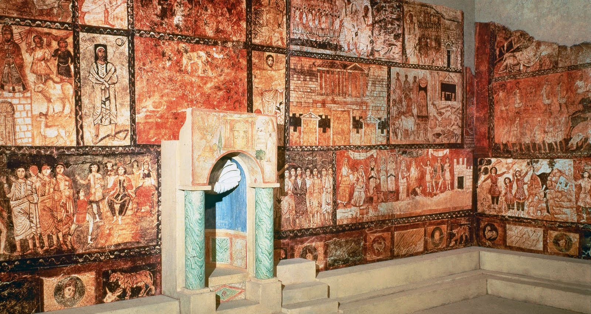

The Artist as Interpreter: Illustration as a Way of Studying Scripture
Bezalel and the Design
The first person in the Torah of whom God says, “I have filled him with the Spirit,” is an artist. Bezalel, son of Uri, son of Hur, is called by name, and the text immediately lists what he received: wisdom, understanding, knowledge, and skill in every kind of craft (Exod 31:2–3). The next verse in the Hebrew names the purpose of these gifts: LAKHSHOV MAKHASHAVOT, to devise designs. The key word is MAKHASHAVAH (מַחֲשָׁבָה, design, thought, H4284). Scripture uses the same word for the thoughts of the human heart (Gen 6:5) and for the purposes of God (Jer 29:11; Isa 55:8).
In the Torah, the artist’s work begins with thought. Before casting the lampstand and shaping the cherubim, Bezalel had to understand what had been told to Moshe (Moses) and give form to the pattern shown on the mountain (Exod 25:40). Every illustrator of the Bible faces the same task: there is a word, and the word must be turned into a form. That turn requires understanding, and so illustration becomes a way of reading Scripture and testing what one has read.
Where the Text Is Silent
Biblical narrative is sparing with visual detail. The account of the binding of Yitzhak (Isaac) in Genesis 22 tells us where father and son went, what they carried, and what they said to each other. It does not tell us how old Yitzhak was, whether he resisted, what Avraham’s (Abraham’s) face looked like, or where the angel was when he called from heaven.
A commentator can leave these questions open. An artist cannot: he has to paint either a boy or a grown man, either bound or free. Every choice agrees with some interpretation or argues against it. A grown Yitzhak matches the rabbinic tradition (midrash) that gives his age as thirty-seven (Seder Olam 1; Bereshit Rabbah 56) and makes his submission voluntary. A child on the altar places the whole weight of the trial on the father.
Illustration exposes the places a reader passes over without noticing. Once at work, the illustrator quickly learns what he does not know about the scene: who stood nearby, what time of day it was, what was in each person’s hands. Questions that stay invisible to the reader become obstacles for him, and to get past them he has to read the verse again, follow the verbs, and look for parallels in other books.
Dura-Europos

The synagogue at Dura-Europos, on the Euphrates in present-day Syria, was painted around 244–245 AD and rediscovered in 1932. Its walls hold the earliest known cycle of Jewish paintings of biblical scenes, and they show how Jews of the third century read the Torah.
In one fresco, Pharaoh’s daughter stands in the Nile holding the infant Moshe. The text says only that she came down to the river to bathe and sent her maid to fetch the basket (Exod 2:5). The painter put the princess in the water and merged two moments into one: she herself finds the child.
On the panel of the well in the wilderness, Moshe stands beside a spring, and twelve streams flow from it toward the tents of the tribes. Neither Exodus 17 nor Numbers 21:16–18 has this detail. It is usually linked to the rabbinic tradition of a well that followed Israel through the desert. The fresco shows the verse together with the interpretation through which the congregation read it.


The Dura masters also solved the hardest problem of all. God’s presence in the frescoes is shown as a hand reaching down from heaven: over Avraham on Mount Moriah, over the parted sea, over the valley of dry bones in the scenes from Ezekiel 37. The image comes from Scripture itself, where God brings his people out “with a mighty hand” (Deut 26:8, KJV). In this way they could depict God’s action without breaking the Second Commandment: the hand shows the deed and leaves unseen the One who acts.
Rembrandt: Interpretation Through Gesture
In Genesis 22:11 the angel calls to Avraham from heaven. In Rembrandt’s 1635 painting he grips Avraham by the wrist, and the knife falls through the air. The story is compressed into a single instant, and in that instant we see what the text expresses in the words “Lay not thine hand upon the lad” (Gen 22:12, KJV): the hand is already raised, and only force can stop it.

In “Jacob Blessing the Sons of Joseph” (1656), Rembrandt stays closer to Scripture and reads it more attentively. Genesis 48:17 says that Yosef (Joseph) was displeased when his father laid his right hand on the younger boy, and that he tried to move it to Menashe’s (Manasseh’s) head. In the painting Yosef touches his father’s hand gently, almost supporting it. Rembrandt rendered the disagreement between son and father as a gesture of respect and tenderness, and Yaakov’s (Jacob’s) reply, “I know it, my son, I know it” (Gen 48:19, KJV), is heard without words. Beside them stands Asenat (Asenath), the boys’ mother, though the scene does not mention her. He brought her in the way a commentator brings into a story a person about whom the verse is silent.

Rembrandt has almost no archaeology: the turbans and brocades come from Amsterdam shops. He looks for accuracy elsewhere, in hands, glances, and the pauses between people. His work is a study of what the people on the pages of Scripture felt.
Ivanov and Chagall: Archaeology and Memory
In the last years of his life, Alexander Ivanov1 worked on a large series of watercolors known as the “Biblical Sketches”. He read the latest scholarship of his day on biblical history and the published reports of excavations in Mesopotamia and Egypt. In his watercolors the patriarchs are dressed and posed like the figures on Assyrian and Egyptian reliefs, and the scenes unfold like a frieze. Ivanov asked what the world of Avraham looked like, and the answer led him back to Scripture itself: to its time, its customs, and its neighbors. The series was left unfinished, and in it one can see the research itself, before it reached a conclusion.

Marc Chagall began his Bible etchings on commission from the Paris publisher Ambroise Vollard and in 1931 traveled to the Land of Israel; the series was published in 1956. His Avraham, Moshe, and prophets look like the old men of Vitebsk, the town where he grew up. Chagall explores another side of Scripture: its life in the people who have read it for three thousand years. A patriarch in his prints resembles a grandfather, and the likeness is true to the substance of the Torah, which binds the generations together through genealogies and commands fathers to tell the story to their children (Exod 13:8; Deut 6:7).
Ivanov travels from the verse back into the depths of time, Chagall forward to today’s reader. Both test the story’s strength: the first asks what in it is historical, the second what in it is still alive.
The Limits of the Method
An image fixes one reading and crowds out the others. Gustave Doré’s engravings (1866) spread around the world, and generations saw the Flood, the Tower of Babel, and the prophets through the eyes of a French Romantic. A picture is easier to remember than a verse, and the artist’s interpretation starts to be taken for the text.

That is why illustration becomes research only when the artist keeps track of where each detail comes from: from the verse, from midrash, from archaeology, or from his own imagination. A commentator cites his source in a footnote; an illustrator has no footnotes, and he alone answers for every line. A good illustration sends the viewer back to the verse with a new question: why is Asenat here, why is the princess in the water, why is Yitzhak a grown man?
The Torah itself draws another boundary. The Second Commandment forbids making an image to bow down to (Exod 20:4–5), and the same Torah tells Bezalel to make cherubim for the sanctuary (Exod 25:18). Such work is justified by what it serves. The cherubim stood over the ark that held the tablets of the covenant, and their faces were turned toward it (Exod 25:20–21). The illustrator of Scripture does the same: his work stands beside the word and turns the reader toward it.
1 Alexander Andreyevich Ivanov (1806–1858) was a Russian painter who spent most of his working life in Rome. He is best known for “The Appearance of Christ Before the People”, a monumental canvas he labored over for some twenty years (now in the Tretyakov Gallery, Moscow). In Russia he is regarded as one of the major religious painters of the nineteenth century.
 A House Made of Words: 10 Facts About One Synagogue
A House Made of Words: 10 Facts About One Synagogue Vasily Polenov in the Holy Land
Vasily Polenov in the Holy Land